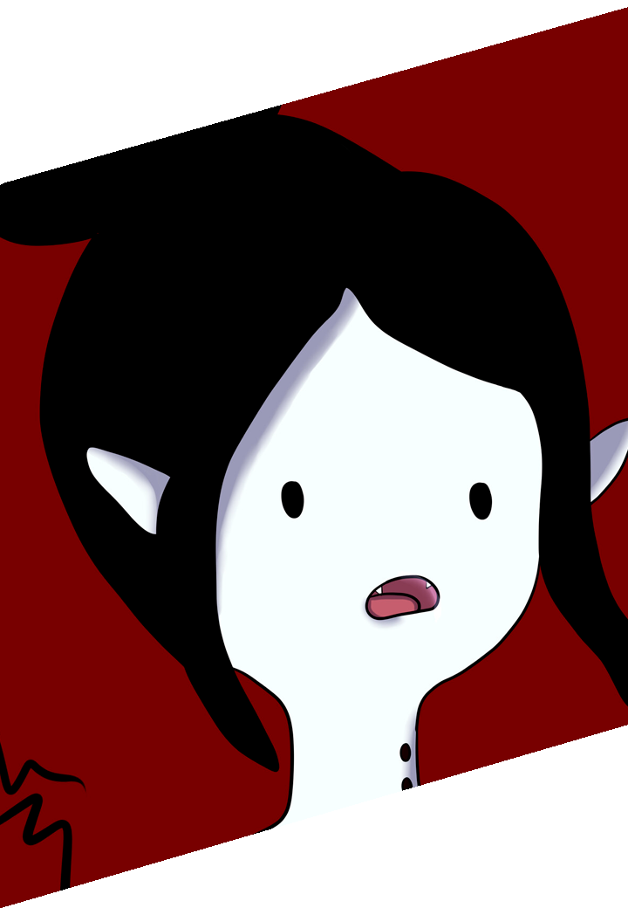
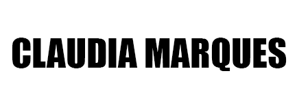

Desenvolvedora
Front-end
QA Automation, IA & Machine Learning
localizado em Brasília-DF


localizado em Brasília-DF
Atuei como atendente no comércio, desenvolvendo experiência em lidar com
desafios,
atender pessoas e
resolver problemas de forma rápida e eficiente.
Após esse período, iniciei minha transição de
carreira
para a área de Tecnologia, com foco em Inteligência Artificial e Machine Learning.
Atendimento ao cliente de forma presencial e online, sempre focado em oferecer suporte eficiente, esclarecer dúvidas e garantir uma experiência positiva. Atuação no fechamento de vendas com organização e responsabilidade, além de gestão de planilhas para controle diário e acompanhamento de metas. Experiência constante na resolução de problemas com agilidade, comunicação clara e foco no resultado.
Minha mais recente experiência acadêmica foi de Tecnóloga de Radiologia 🎓 que fiz que fiz na Cidade. Além disso me mantenho sempre atualizado com cursos intensivos online. Também iniciei A Graduação em Inteligência Artificial IA.